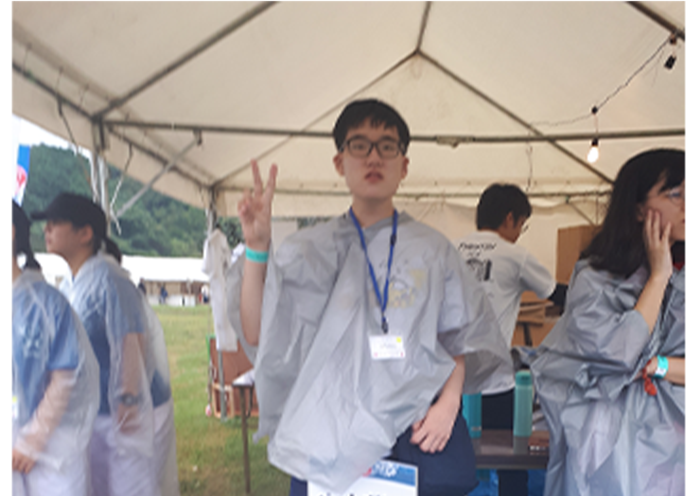

今までの経験
始めての海外ボランティア、宗像環境浄化活動
１年生夏の頃、学校事業の一環として日本の福岡にある宗像という地域に行きました。
そこに行って、最初は海辺に捨てられたゴミを種類別に分別して拾いました。その次の日からは環境保存の一環で開かれるその地域の祭り（宗像フェス）の準備を手伝いました。このような日程の中で、一緒にボランティア活動をすることになった日本の大学生たちとの交流会もありました。
このような生まれて始めての海外環境保存関連のボランティア活動をして、全世界的な環境保存の重要性を気付いたし、日本の大学生たちとの交流会を通じて、交流会の重要性も気付き、そして、日本語勉強への動機も得られました。
新たな世界への挑戦、特殊外国語の世界へ
３年生の夏休みの頃、偶然に学校の特殊外国語事業団で開かれる夏休み限定の特殊外国語キャンプに参加することになりました。この特殊外国語キャンプは政府がいわゆる特殊外国語に指定された言語の中で、自分が学びたい言語を一つ選んで、授業を受けるプログラムです。言語の種類はベトナム語、インドネシア語、タイ語などの東南アジアで使われる言語とアラビア語、ヒンディー語、トルコ語がありました。その中で、私は以前ちょっと学んだことがある特殊外国語、ベトナム語以外の言語も学びたくて、インドネシア語を選択することになりました。
そこで、インドネシア語の授業を本格的に受けてみた後、二つのことが思い出されました。まず、一つのことは普通東南アジア語は学びにくい言語という先入観があるが、このインドネシア語はそれと違って、比較的に軽い心構えで面白く学ぶことができる、以外に学びやすい言語だったのことでした。そして、残り一つはうちの学部のある先生のお話のように、やはり一つの言語を学ぶと、単純にその言語を学ぶことではなく、その言語を学ぶことによって、見える世界が広がるということを今回の機会で、もっとはっきり分かるようになったことでした。